Past concerts
Blackpink Japan Premium Debut Showcase
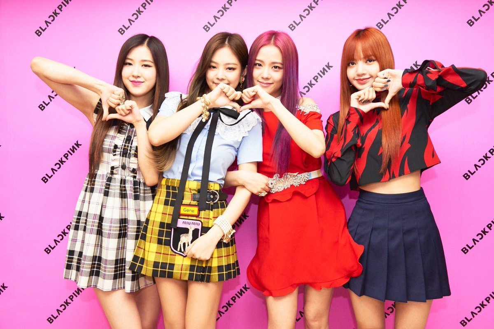
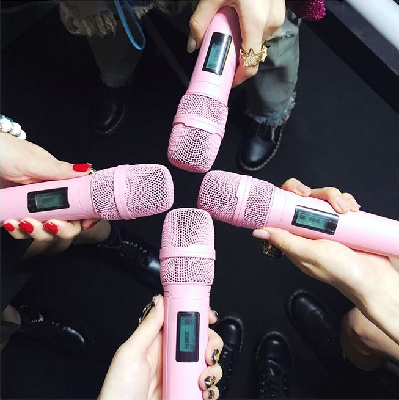
This concert was held on July 20, 2017 and helped to promote themselves in Japan. It was held in Nippon Budokan in front of 14,000 fans. Thier set list consisted of the group's previous releases being performed in Japanese ("Boombayah", "Playing with Fire", "Whistle", "Stay", and "As If It's Your Last") and the encore was the Korean version of Boombayah.
Livestream Concert: The Show (2021)
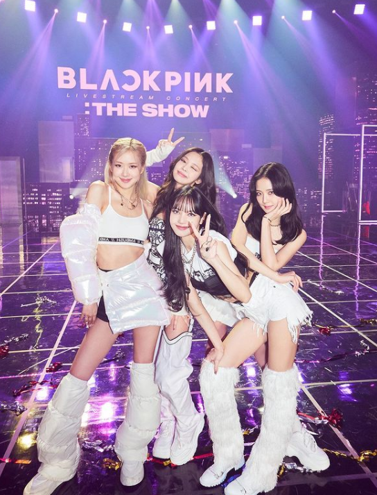
This concert was held on January 31, 2021 and included songs from The Album, solo stages, and previously released songs. It was only available on Blackpink's YouTube channel and only if you had a membership. Around 280,000 people attended from all over the world. Thier set list was:
- "Kill This Love"
- "Crazy Over You"
- "How You Like That"
- "Don't Know What To Do"
- "Playing With Fire"
- "Lovesick Girls"
- "Habits" (Jisoo solo)
- "Say So" (Lisa solo)
- "Sour Candy"
- "Love To Hate Me"
- "You Never Know"
- "Solo" (Jennie solo)
- "Gone" (Rosé solo)
- "Pretty Savage"
- "DDU-DU DDU-DU"
- "Whistle"
- "As If It's Your Last"
- "Boombayah"
- "Forever Young" (Encore)
Coachella 2023 Performances
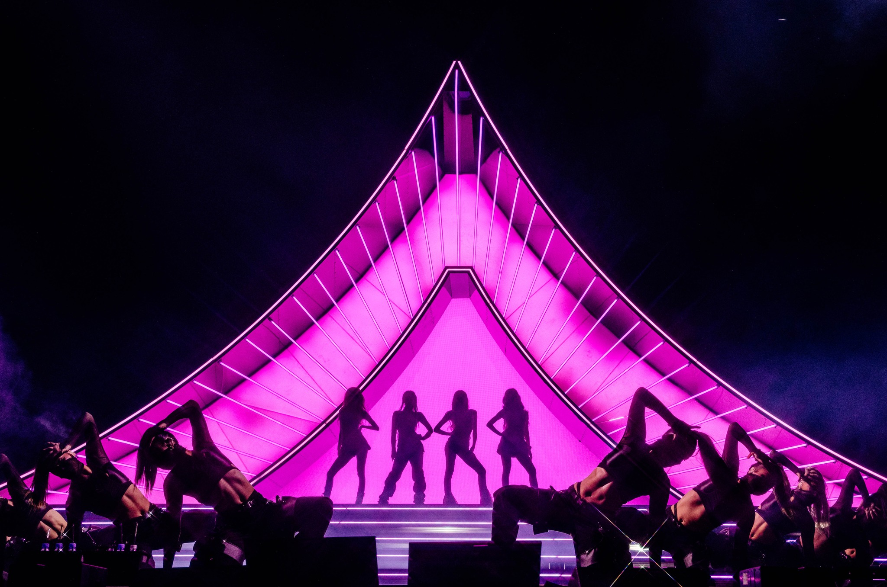
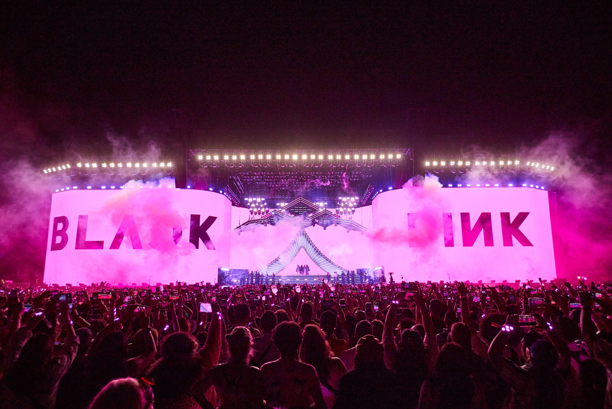
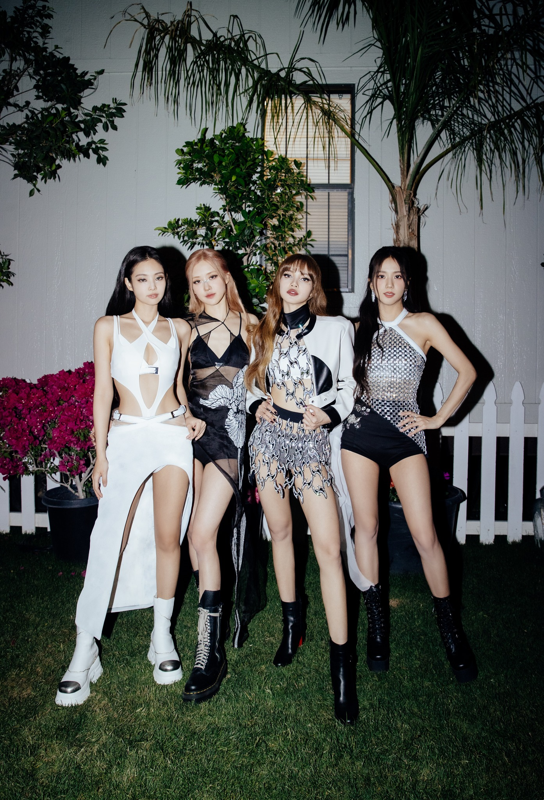
Their performances were held on April 15, 2023 and April 22, 2023. They were the first K-pop group to healine the festival. It included songs across their discography with modifications to some of their songs. There were an estimated 125,000 people in attendance. Their set list was:
- "Pink Venom"
- "Kill This Love" (extended intro)
- "How You Like That"
- "Pretty Savage" (extended intro and chair dance break)
- "Kick It"
- "Whistle" (extended outro)
- "You & Me" (Jennie solo, remix with new rap verse)
- "Flower" (Jisoo solo)
- "Gone" and "On The Ground" (Rosé solo)
- "Money" (Lisa solo, unreleased explicit version)
- "Boombayah" (shortened)
- "Lovesick Girls"
- "Playing with Fire" (extended outro)
- "Typa Girl" (extended intro)
- "Shut Down"
- "Tally"
- "DDU-DU DDU-DU" (extended intro)
- "Forever Young" (extended outro)
There was an opening video before "Pink Venom" and a "Boombayah" remix with the dancers on stage between "Money" and "Boombayah"
Lisa Global Citizen Festival
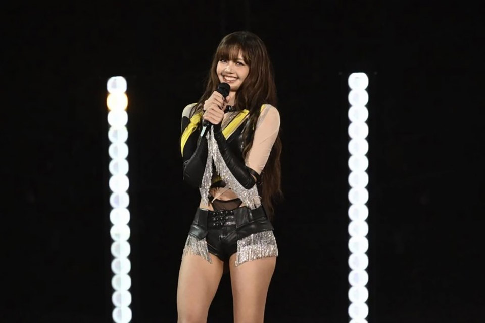
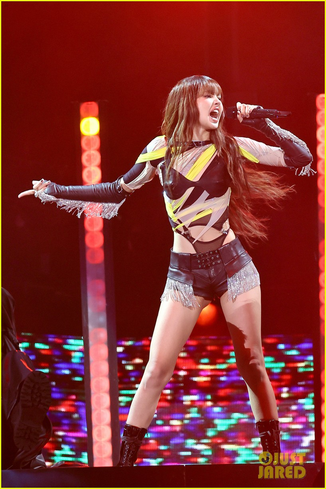
Lisa performed at the Global Citizen Festival held in New York City on September 28, 2024. Her set list was:
- Lalisa
- Money
- Moonlit Floor
- New Woman (shortened without Rosalía's verse)
- Rockstar (extended outro)
Lisa Coachella 2025
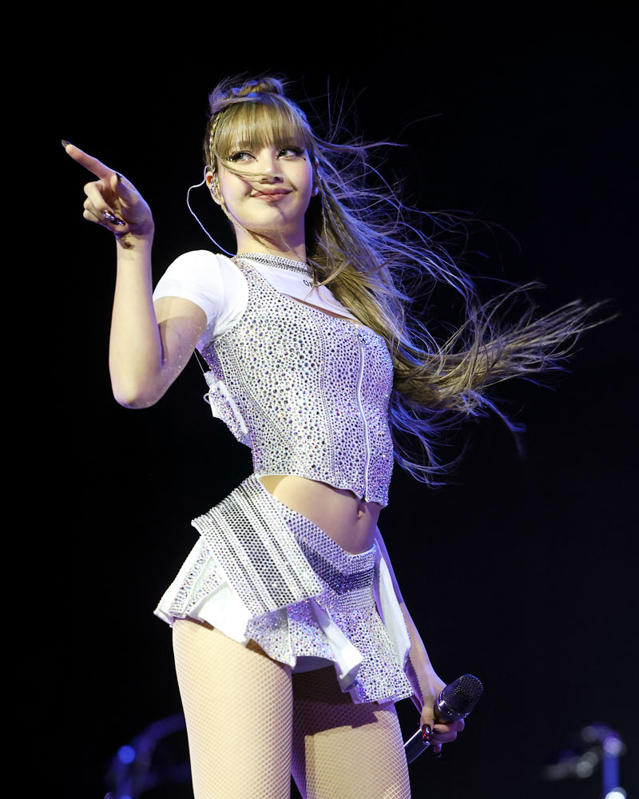
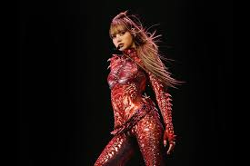
Lisa performed at Coachella 2025 on the Sahara Stage on April 11, 2025 and April 19, 2025. Her performance was structured into five acts which coincided with the alter ego theme of her solo album. Her set list for both weekends included:
Vixi
- Alter Ego (video intro with elements of "Thunder")
- Thunder (extended)
- Fxck Up the World (Vixi solo version)
- Lalisa (shortened with extended dancer outro)
Kiki
- Rediscover (video interlude with elements of "Money" and "New Woman"
- New Woman (solo version)
- When I'm with You (shortened with extended band outro)
Sunni
- The Dream (interlude with elements of "Moonlit Floor (Kiss Me)" and "Dream"
- Dream
- Moonlit Floor (Kiss Me)
- Chill (extended dencer outro)
Speedi
- Supercharged (video interlude with elements of "Elastigirl")
- Elastigirl
- Money (shortened with extened outro)
- Born Again (shortened with extended band outro)
Roxi
- The Rockstar (video interlude with elements of "Lifestyle")
- Lifestyle
- Rockstar (extended)
- Fxck Up the World (band outro)
Jennie Coachella 2025
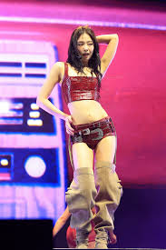
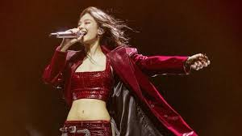
Jennie performed at Coachella 2025 on the Outdoor Theatre Stage on April 13, 2025 and April 20, 2025. Her set list included:
- Filter
- Mantra
- Handelbars (solo version)
- Start a War
- Zen
- F.T.S
- Damn Right (solo version)
- Love Hangover (solo version)
- Seoul City
- ExtraL (solo version)
- With the IE (Way Up)
- Like Jennie
- Starlight
On the first weekend she brought out Kali Uchis to perform "Damn Right" with her. On the second weekend she performed the "Solo" dance break between "Like Jennie" and "Starlight".
Spotlight: Rosé
Rosé performed an acoustic set and Q&A at the Grammy Museum on December 4, 2025. This was to celebrate her solo debut album and her 2026 Grammy nominations. The setlist included acoustic versions of original tracks and covers:
- Toxic Till the End
- No Suprises (partial Raiohead cover)
- Call it the End
- Number One Girl
- Norman Fucking Rockwell/50 Ways to Leave Your Lover (Lana Del Rey and Paul Simon cover medley)
- APT
Jennie 2025 Melon Music Awards
Jennie performed a three-song setlist at the 2025 Melon Music Awards on December 20, 2025. This setlist included:
- Seoul City
- ZEN
- like Jennie (Extended remix)
Jennie 2026 Golden Disc Awards
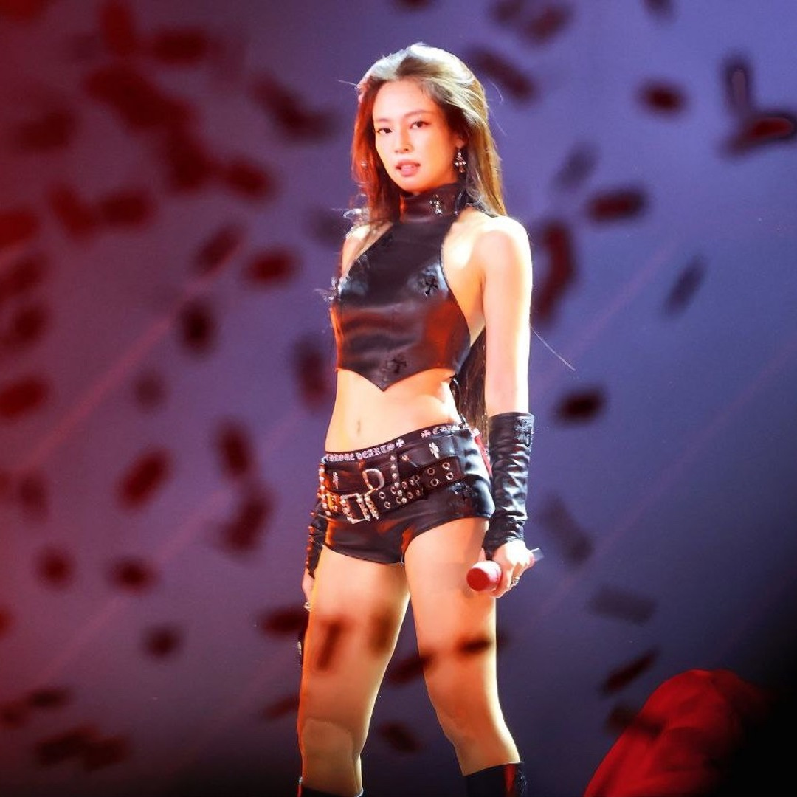
Jennie performed a three-song setlist at the 2026 Golden Disc Awards on January 10, 2026. This setlist included:
- Filter
- Damn Right
- like Jennie (EDM remix)
Jennie
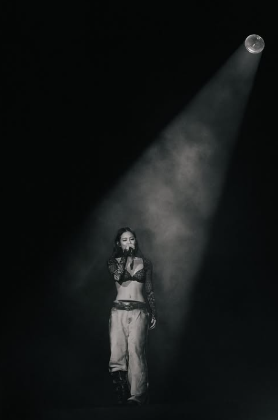
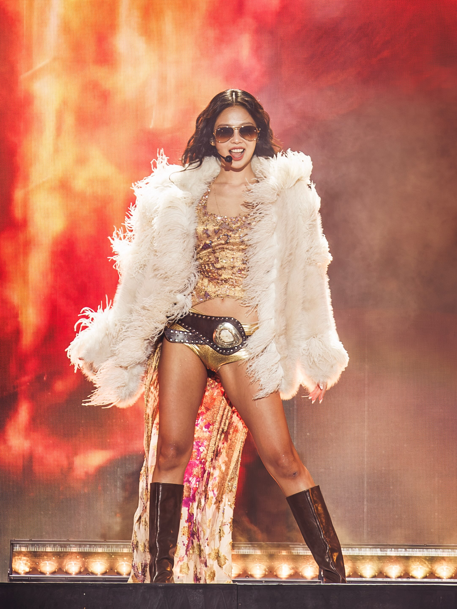
Jennie headlined the 2026 Governors Ball Music Festival on June 7, 2026, the 2026 Roskilde Festival on July 3, 2026, and the 2026 Mad Cool Festival on July 9, 2026.She performed unreleased songs and solo versions of her songs from her album Ruby.
- Filter
- Damn RIght
- Mantra
- start a war
- Handlebars
- One of the Girls (The Weeknd cover)
- Love Hangover
- Dracula (Tame Impala cover)
- Seoul City
- F.T.S.
- lockitdown (unreleased)
- HEAVEN (unreleased)
- ExtraL (extended intro)
- with the IE (way up)
- Starlight
- Less than a Lover (unreleased)
- like Jennie
Jennie Lollapalooza
Jennie headlined the 2026 Lollapalooza Chicago 2026 on August 1, 2026. She performed unreleased songs and solo versions of her songs from her album Ruby.
- Filter
- Damn Right
- Mantra (extended dance break)
- start a war
- Handlebars
- ZEN
- Love Hangover
- Dracula (Tame Impala cover)
- Seoul City (extended intro)
- Less than a Lover
- sweettooth (unreleased)
- FALLEN ANGEL
- lockitdown (unreleased)
- HEAVEN
- ExtraL
- with the IE (way up)
- Starlight
- like Jennie (extended remix)
Jennie Summer Sonic
Jennie headlined the 2026 Summer Sonic in Tokyo on August 14, 2026 and in Osaka on August 16, 2026. She performed unreleased songs and solo versions of her songs from her album Ruby.
- Filter
- Damn Right
- Mantra
- start a war
- Handlebars
- One of the Girls (The Weeknd cover)
- Love Hangover
- Dracula (Tame Impala cover)
- Seoul City
- Less than a Lover
- sweettooth (unreleased)
- FALLEN ANGEL (unreleased)
- lockitdown (unreleased)
- HEAVEN (unreleased)
- ExtraL
- with the IE (way up)
- Starlight
- like Jennie